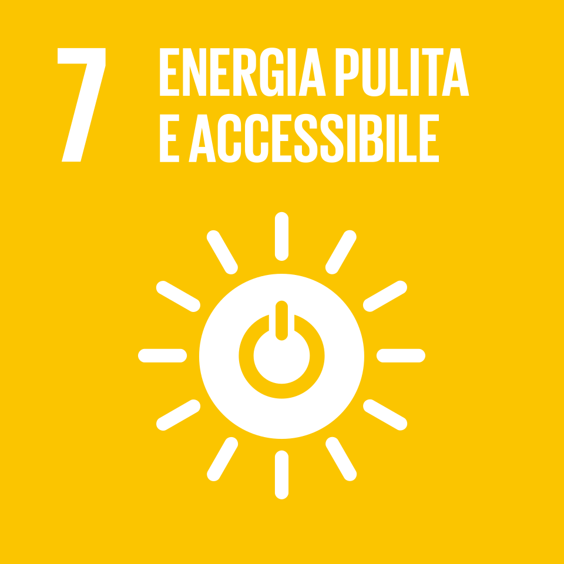

7
Assicurare un'istruzione di qualità, equa ed inclusiva, e promuovere opportunità di apprendimento per tutti
L'Obiettivo 7 dell'Agenda 2030 delle Nazioni Unite si propone di garantire a tutti
l'accesso a un'energia pulita, affidabile, sostenibile e moderna a prezzi accessibili.
L'energia è considerata uno dei motori fondamentali dello sviluppo sostenibile:
alimenta ospedali, scuole e industrie, riduce la povertà e rappresenta la base
indispensabile per affrontare la crisi climatica. Senza energia pulita e accessibile,
nessun paese può garantire ai propri cittadini un futuro davvero sostenibile.
Nonostante i progressi degli ultimi decenni, ancora oggi circa 675 milioni di persone
nel mondo non hanno accesso all'elettricità, e quasi 2,4 miliardi continuano a
cucinare con combustibili inquinanti come legna e carbone. La dipendenza dai
combustibili fossili continua ad alimentare le emissioni di gas serra, rendendo
urgente una transizione verso le energie rinnovabili — solare, eolica e idroelettrica
— per garantire un futuro sostenibile al pianeta.

L'SDG 7 si suddivide in 5 target da raggiungere entro il 2030
Garantire l'accesso universale a servizi energetici moderni, affidabili e a prezzi accessibili.
Aumentare considerevolmente la quota di energie rinnovabili nel mix energetico globale.
Raddoppiare il tasso globale di miglioramento dell'efficienza energetica.
Potenziare la cooperazione internazionale per facilitare l'accesso alla ricerca e alle tecnologie per l'energia pulita, incluse quelle rinnovabili ed efficienti.
Espandere le infrastrutture energetiche e migliorare la tecnologia per fornire servizi energetici moderni e sostenibili nei paesi in via di sviluppo.